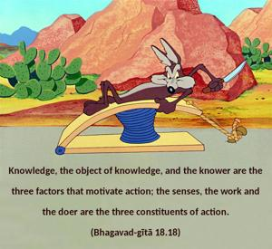
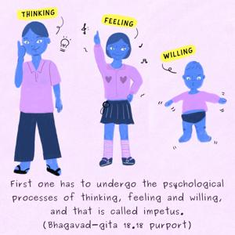

Knowledge, the object of knowledge, and the knower are the three factors that motivate action; the senses, the work and the doer are the three constituents of action.


There are three kinds of impetus for daily work: knowledge, the object of knowledge, and the knower. The instruments of work, the work itself and the worker are called the constituents of work. Any work done by any human being has these elements. Before one acts, there is some impetus, which is called inspiration. Any solution arrived at before work is actualized is a subtle form of work. Then work takes the form of action. First one has to undergo the psychological processes of thinking, feeling and willing, and that is called impetus. The inspiration to work is the same if it comes from the scripture or from the instruction of the spiritual master. When the inspiration is there and the worker is there, then actual activity takes place by the help of the senses, including the mind, which is the center of all the senses. The sum total of all the constituents of an activity is called the accumulation of work.